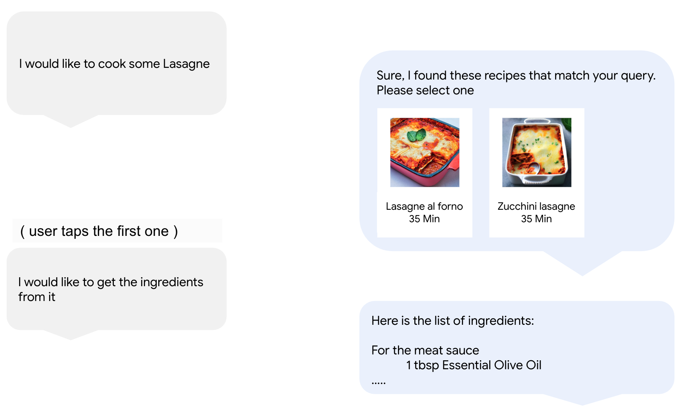
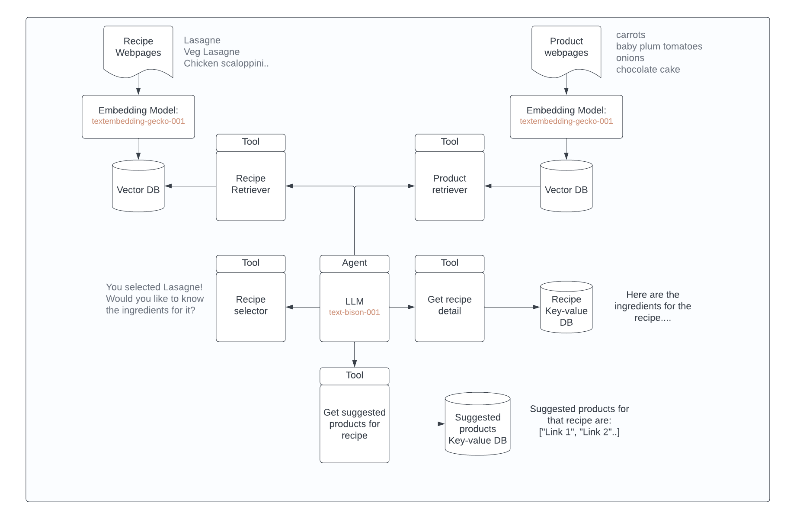

Ai
CoT (Chain-of-Thought) and ReAct (Reason + Act) Prompting
TL;DR
- Chain-of-Thought (CoT): Step-by-step reasoning before an answer.
- ReAct: Reasoning interleaved with tool use.
- Why it matters: Both improve accuracy, trust, and capability of LLM systems.
Glossary
- LLM (Large Language Model): Predicts next words based on patterns in data.
- Prompting: Guiding an LLM with input text.
- Few-shot Prompting: Showing examples of inputs and outputs.
- Chain-of-Thought (CoT): Requiring intermediate reasoning steps.
- ReAct: Interleaving reasoning with external tool actions.
- Observation: Result of a tool call that feeds back into reasoning.
- Grounding: Anchoring answers in real, retrieved facts instead of guesses.
Flow of Ideas
- Standard prompting: Question → direct answer.
- CoT prompting: Question → reasoning steps → final answer.
- ReAct prompting: Question → thought → action → observation → next thought → final answer.
Architecture
- Input Layer: User query.
- Reasoning Engine: LLM generates structured reasoning steps.
- Action Layer (ReAct): LLM issues tool calls.
- Observation Layer: Tool outputs return as inputs.
- Output Layer: Final synthesized answer.
The Logic Behind CoT
TL;DR
- Problem: LLMs try to shortcut to an answer, often wrong.
- Solution: Make them show reasoning explicitly.
- Benefits:
- Transparency: You can see the logic.
- Accuracy: Fewer errors on multi-step tasks.
- Debuggability: Easier to find where it went wrong.
- Generalization: Handles new problems better.
Why models need it
- LLMs are trained to predict the next word.
- Without guidance, they shortcut: they try to “jump to an answer” in one step.
- Many problems (math, logic, planning, coding) require intermediate steps. Humans don’t solve them in one mental leap, and LLMs shouldn’t either.
What CoT does
- You teach the model a format: “show reasoning first, then answer.”
Benefits
- Transparency: You can read the reasoning and judge if it’s sensible.
- Accuracy: CoT reduces errors in multi-step tasks by making the model spell out logic.
- Generalization: Works even if the model didn’t see that exact problem in training.
- Debugging: When results are wrong, the reasoning reveals why.
The Logic Behind ReAct
TL;DR
- Problem: CoT is limited to knowledge inside the model.
- Solution: Add “Action” steps where the model calls external tools.
- Loop: Thought → Action → Observation → Next Thought → Final Answer.
- Benefits:
- Freshness: Pulls in up-to-date info.
- Grounding: Cites facts instead of hallucinating.
- Capability: Extends model with calculators, APIs, search.
- Safety: Tools limit what the model can do.
Why CoT alone is not enough
- CoT only uses knowledge inside the model’s weights.
- That knowledge is frozen (up to its training cutoff).
- If you ask: “Who won the 2023 Nobel Prize in Literature?” — a model trained on 2021 data cannot answer correctly, no matter how good its reasoning is.
What ReAct does
- ReAct interleaves reasoning (Thought) with actions (tool use).
- Tools can be search engines, databases, calculators, APIs.
- The model decides: “I don’t know this, I’ll call a tool.”
- The tool output feeds back into reasoning.
- It continues until it can produce an answer.
Benefits
- Freshness: Model can access up-to-date info via tools.
- Grounding: Answers are supported by retrieved facts, not hallucination.
- Capability extension: Tools expand what the LLM can do (math, code execution, CRM lookup).
- Safety: You can constrain the LLM to only use specific tools instead of freeform guessing.
Comparison: CoT vs ReAct
Feature | Chain-of-Thought (CoT) | ReAct (Reason + Act) |
|---|---|---|
Source of truth | Model’s internal knowledge | Reasoning + external tools |
Output format | Reasoning + final answer | Thought → Action → Observation → Answer |
Benefits | Better reasoning, transparency, accuracy | Freshness, grounding, expanded abilities |
Weakness | Stuck with training data, can hallucinate facts | Complex orchestration, higher costs |
Cost | More tokens | More tokens + tool infra |
Data Contracts
- CoT: Require reasoning steps before the final answer.
- ReAct: Require strict Thought/Action/Observation formatting, e.g.
Parameters
- Temperature: Lower for deterministic reasoning, higher for creativity.
- Max tokens: Must allow enough space for multi-step chains.
- Stop sequences: Important in ReAct to separate thoughts from actions.
Real-World Benefits
- CoT: Math, logic puzzles, planning, tutoring.
- ReAct: Fact-checking, research assistants, customer support, coding tools.
- Both together: Make LLMs more reliable, trustworthy, and auditable.
Risks and Costs
- Token overhead: CoT/ReAct both increase output length.
- Complexity: ReAct requires tool orchestration.
- Reliability: Reasoning may still be flawed, tools may fail.
- Security: Tools must be sandboxed to prevent unsafe behavior.
Appendix: Reusable Snippets
Chain-of-Thought Template
Q: {your question}
A: Let’s reason step by step:
1. ...
2. ...
3. ...
Final Answer: ...
Example
Q: What is 23 * 47?
A: Let’s reason step by step:
1. Break it down: 20*47 = 940
2. Add the remaining: 3*47 = 141
3. Total = 940 + 141 = 1081
Final Answer: 1081
ReAct Loop Template
Question: {your question}
Thought: {model reasoning step}
Action: {tool call, e.g. search["keyword"]}
Observation: {tool result}
... repeat Thought → Action → Observation ...
Final Answer: {conclusion based on observations}
Example
Question: Who won the 2016 Nobel Prize in Literature?
Thought: I should look this up.
Action: search["2016 Nobel Prize Literature winner"]
Observation: Result: Bob Dylan
Thought: Now I know the answer.
Final Answer: The 2016 Nobel Prize in Literature was awarded to Bob Dylan.
Python Helper: Simple LLM Call Wrapper
def call_llm(model, parameters, prompt):
"""Wrapper to send a prompt and print reasoning + final answer."""
response = model.predict(
prompt=prompt,
temperature=parameters.get("temperature", 0.2),
max_output_tokens=parameters.get("max_output_tokens", 512),
)
print("=== Prompt ===")
print(prompt)
print("=== Response ===")
print(response)
return response
CoT Prompt Builder Function
def build_cot_prompt(question: str) -> str:
return f"""Q: {question}
A: Let’s reason step by step:
1."""
ReAct Execution Skeleton
def react_agent(question, tools):
print("Question:", question)
thought = "I need to search for the answer."
print("Thought:", thought)
action = f"search[{question}]"
print("Action:", action)
observation = tools["search"](question)
print("Observation:", observation)
final_answer = f"Based on my search, the answer is: {observation}"
print("Final Answer:", final_answer)
return final_answer
(where
tools is a dict of functions, e.g. {"search": wikipedia_search})Quick Prompts to Reuse
- CoT:
"Explain step by step how to solve: {problem}" - ReAct:
"Answer the question using the format: Thought, Action, Observation, Final Answer."
Worked Example: Same Question, Three Approaches
Question:
“Who won the 2016 Nobel Prize in Literature?”
Plain Prompting
Q: Who won the 2016 Nobel Prize in Literature?
A: Bob Dylan.
- Logic shown: None.
- Problem: If the model didn’t memorize it, it may hallucinate.
- Trust level: Low (no explanation, no source).
Chain-of-Thought (CoT)
Q: Who won the 2016 Nobel Prize in Literature?
A: Let’s reason step by step:
1. The Nobel Prize in Literature is awarded annually.
2. In 2016, the award gained attention because it went to an unexpected choice.
3. The recipient was the American musician and songwriter Bob Dylan.
Final Answer: Bob Dylan.
- Logic shown: Yes (stepwise recall).
- Benefit: Transparent reasoning path.
- Limit: Still depends on model’s internal memory (training cutoff).
ReAct (Reason + Act)
Question: Who won the 2016 Nobel Prize in Literature?
Thought: I should verify this with a reliable source.
Action: search["2016 Nobel Prize in Literature winner"]
Observation: Result: Bob Dylan.
Thought: Now I can confidently answer.
Final Answer: The 2016 Nobel Prize in Literature was awarded to Bob Dylan.
- Logic shown: Yes (thoughts + observations).
- Benefit: Grounded in retrieved information, not just memory.
- Extra: Can show source links, timestamps, or tool logs.
Takeaway
- Plain prompting = fast but opaque.
- CoT = better accuracy and transparency when reasoning is required.
- ReAct = reasoning + external grounding, best for factual or fresh info.
Scenario - Cymbal Grocery
Imagine you are a user of Cymbal Grocery, your favorite grocery store. You would like to cook something nice for dinner, like lasagne, but you don't know where to start, which ingredients to buy, or how to cook lasagne.
Cymbal Grocery has just released a new conversational bot, GroceryBot!
GroceryBot will help you in your shopping journey by:
- Suggesting you a recipe
- Getting the list of ingredients and cooking instructions
- Suggesting you products you will like to buy for that recipe
- Helping you find new products you'd like to buy for your dinner!
Objective & Requirements
Your objective is to develop GroceryBot!
There is one main requirement: you will need to make sure that this bot is grounded. Grounding refers to the process of connecting LLMs with external knowledge sources, such as databases.
In practice, this means that GroceryBot should leverage:
- The existing recipe catalog of Cymbal Grocery. GroceryBot should not suggest recipes that are not part of this catalog.
- The existing product catalog of Cymbal Grocery. GroceryBot should not suggest products that are not part of this catalog.
- A set of precomputed products suggested for a recipe.
To do this, you can use an approach called Retrieval Augmented Generation (RAG), which attempts to mitigate the problem of hallucination by inserting factual information (in this case, recipe and product information) into the prompt which is sent to the LLM.
Frontend Mock
The following image shows what could be possible with GroceryBot if the solution was to be deployed and integrated with a FrontEnd application.

Implementation of the GroceryBot
This system is powered by Vertex AI Generative models and LangChain.
As mentioned earlier, to ground the model you will require to connect the LLM to the internal company databases. You will do that by implementing a ReAct like Agent in LangChain, capable of taking decisions and decide when to query these databases.
The following setup is adopted:
- The Product & Recipe catalog are defined locally using Faiss. In a production scenario, where you need to scale beyond few examples you might want to explore Vertex AI Matching Engine a managed vector database part of Vertex AI which leverages ScaNN similarity search.
- The details of a recipe and the suggested products to buy for that recipe are also stored locally. In a production scenario you might want to use a NoSQL database like Cloud Datastore to store this.
You can see below a diagram which shows the different components of the agent and what is the expected interaction with databases.
